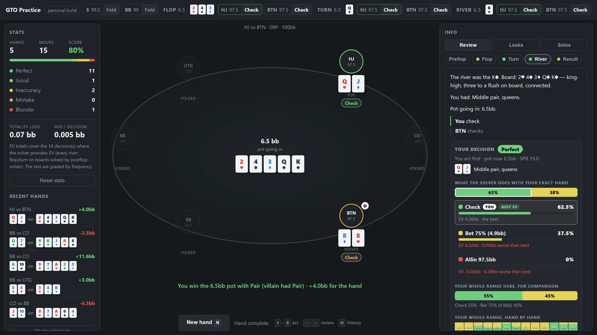

a free poker trainer that grades every decision against a solver
You get dealt into a 6-max no-limit hold'em hand and play it out against an opponent that follows a solved strategy, mixing its actions the way the equilibrium says to rather than following rules of thumb. Once the hand ends, every decision you made gets graded on a five-step scale from Perfect to Blunder, and you can step through the hand street by street to see what the solver would have done and why.
It runs on your own computer. Nothing gets sent anywhere, and it's free.

N deals, arrows step through the review.Start.bat. It opens in your browser. Keep the black window open while you play.Windows may say it "protected your PC" because the app isn't from a known publisher. Click More info, then Run anyway.
Built on two open-source solvers, postflop-solver and TexasSolver, which are included under their own licenses. Not affiliated with any commercial solver.